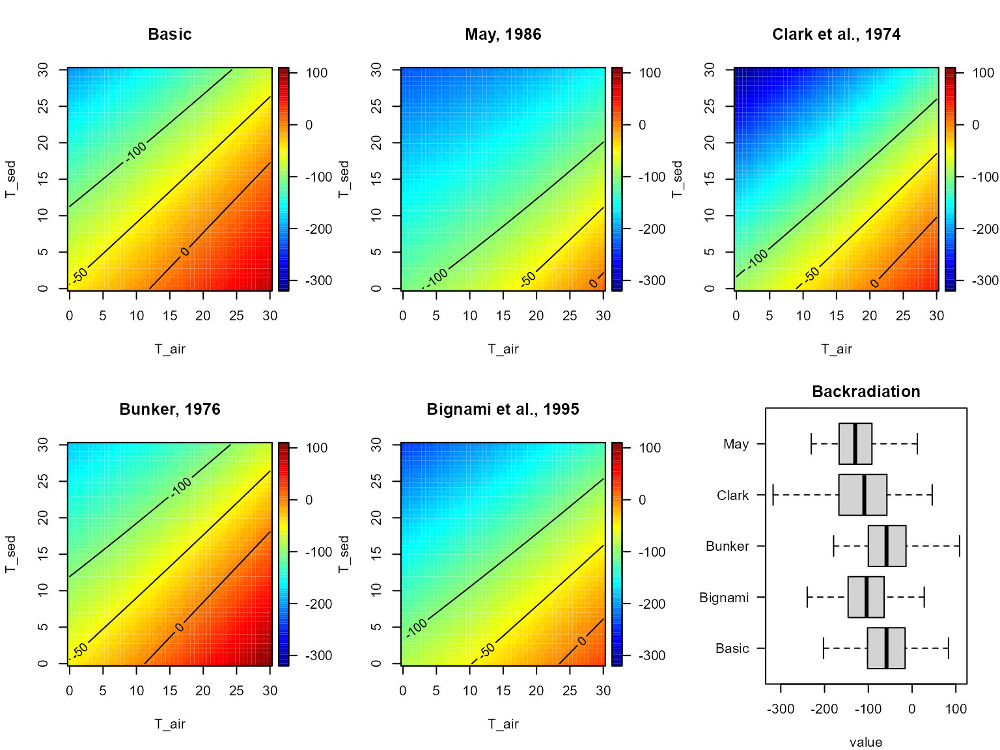

TempSED.RmdAbstract
The R-package TempSED contains functions to model temperature variations in aquatic sediments.The R-package TempSED contains functions and datasets to model temperature variations in aquatic sediments.
The function to run the temperature models, in one (vertical) dimension is:
[1] "TempSED_run1D"The functions to obtain settings (0D, 1D, state variables, grid information, parameter settings), of the temperature models are:
[1] "TempSED_get0Dvars" "TempSED_get1Dvars" "TempSED_getdepth"
[4] "TempSED_getdx" "TempSED_getgrid" "TempSED_getirr"
[7] "TempSED_getparms" "TempSED_getpor" "TempSED_getstates"The functions to calculate properties of the air, or bulk sediment, or water are:
[1] "air_cp" "air_density" "air_humidity" "air_properties"
[5] "air_tc" "air_td" "air_vapor" [1] "bulk_cp" "bulk_density" "bulk_properties" "bulk_tc"
[5] "bulk_td" [1] "water_cp" "water_density" "water_lh" "water_properties"
[5] "water_tc" "water_td" The functions to calculate heat and water fluxes with the air:
[1] "flux_backradiation" "flux_evaporation" "flux_heat"
[4] "flux_latent" "flux_sensible" Other minor functions are:
There are several data sets to model the temperature of the Oosterschelde (a marine bay in the Netherlands)
Function air_properties calculates:
It is defined as:
air_properties (T_air = 10, P = 101325, Qrel = 0.01)
names mean.values description units
1 T_air 10.00 air temperature dgC
2 P 101325.00 air pressure Pa
3 Qrel 0.01 relative air humidity -The function returns a list that has a description of the output and the parameter settings in its attributes:
knitr::kable(air_properties())| humidity | density | vapor | cp_air | tc_air | td |
|---|---|---|---|---|---|
| 7.56e-05 | 1.246587 | 12.26406 | 1007.024 | 0.0249254 | 1.99e-05 |
attributes(air_properties())$description names description units
1 humidity specific humidity of the air kg/kg
2 density air density kg/m3
3 vapor vapor pressure of air Pa
4 cp_air specific heat capacity of air J/kg/dg
5 td_air thermal conductivity of air W/m/dg
6 tc_air thermal diffusivity of air m2/sIt can be called with a vector of input values. In this case, the parameter attribute will contain the mean of the inputs.
AP <- air_properties(T_air=10:12)
knitr::kable(AP)| humidity | density | vapor | cp_air | tc_air | td |
|---|---|---|---|---|---|
| 7.56e-05 | 1.246587 | 12.26406 | 1007.024 | 0.0249254 | 1.99e-05 |
| 8.09e-05 | 1.242196 | 13.11049 | 1007.028 | 0.0250047 | 2.00e-05 |
| 8.64e-05 | 1.237836 | 14.00793 | 1007.034 | 0.0250838 | 2.01e-05 |
The dependency of the air properties on varying air temperature, humidity and atmospheric pressure are estimated:
T.seq <- seq(0, 30, length.out = 100)
Q.seq <- seq(0, 1, length.out = 100)
P.seq <- seq(101325, 101325*2, length.out = 100)
Dtq <- outer(X = T.seq,
Y = Q.seq,
FUN = function(Ta, Q)
air_properties(T_air = Ta, Qrel = Q)$density)
Dtp <- outer(X = T.seq,
Y = P.seq,
FUN = function(Ta, P)
air_properties(T_air = Ta, P = P)$density)
Vtq <- outer(X = T.seq,
Y = Q.seq,
FUN = function(Ta, Q)
air_properties(T_air = Ta, Qrel = Q)$vapor)
Vtp <- outer(X = T.seq,
Y = P.seq,
FUN = function(Ta, P)
air_properties(T_air = Ta, P = P)$vapor)
Htq <- outer(X = T.seq,
Y = Q.seq,
FUN = function(Ta, Q)
air_properties(T_air = Ta, Qrel = Q)$humidity)
Htp <- outer(X = T.seq,
Y = P.seq,
FUN = function(Ta, P)
air_properties(T_air = Ta, P = P)$humidity)
par(mfrow=c(2,3), las=1, oma=c(0,0,2,0))
image2D(z = Dtq, x = T.seq, y = Q.seq,
contour = TRUE,
main = "density", xlab = "T_air, dgC",
ylab = "Qrel, -", clab = "kg/m3")
image2D(z = Vtq, x = T.seq, y = Q.seq,
contour=TRUE,
main = "vapor pressure", xlab = "T_air, dgC",
ylab = "Qrel, -", clab = "Pa")
image2D(z = Htq, x = T.seq, y = Q.seq,
contour=TRUE,
main = "humidity", xlab = "T_air, dgC",
ylab = "Qrel, -", clab = "kg/kg")
image2D(z = Dtp, x = T.seq, y = P.seq/1000,
contour=TRUE,
main = "density", xlab = "T_air, dgC",
ylab = "P, KPa", clab = "kg/m3")
image2D(z = Vtp, x = T.seq, y = P.seq/1000,
contour=TRUE,
main = "vapor pressure", xlab = "T_air, dgC",
ylab = "P, KPa", clab = "Pa")
image2D(z = Htp, x = T.seq, y = P.seq/1000,
contour = TRUE,
main = "humidity", xlab = "T_air, dgC",
ylab = "P, KPa", clab = "kg/kg")
mtext(outer = TRUE, side = 3, "air properties", cex = 1.5)We compare the output of the function air_properties with a set of reference values, for which the following sources were used:
airSat.ref <- data.frame(
temp = seq(from = 0, to = 30, by = 5),
vapor = c(0.003767, 0.005387, 0.007612, 0.01062,
0.014659, 0.019826, 0.027125), #kg/kg
P = c(0.6113, 0.8726, 1.2281, 1.7056,
2.3388, 3.1690, 4.2455)*1000) # PaThe air properties are estimated for a sequence of temperatures, and for air that is saturated with water (Qrel=1) or that is dry (Qrel=0).
T.seq <- 0:30
Air.sat <- data.frame(temp = T.seq,
air_properties(T_air = T.seq, Qrel = 1))
Air.dry <- data.frame(temp = T.seq,
air_properties(T_air = T.seq, Qrel = 0))
par(mfrow=c(1,3), las=1)
plot(T.seq, Air.sat$vapor,
type = "l", main = "Saturated vapor pressure",
xlab = "Air temperature", ylab = "Pa")
points(airSat.ref$temp, airSat.ref$P)
plot(T.seq, Air.sat$humidity,
type = "l", main = "Saturated humidity",
xlab = "Air temperature", ylab = "kg/kg")
points(airSat.ref$temp, airSat.ref$vapor)
plot(T.seq, Air.dry$density,
type = "l", main = "Dry air density",
xlab = "Air temperature", ylab = "kg/m3")
points(airDry.ref$temp, airDry.ref$density)Function water_properties calculates:
It is defined as:
water_properties (T_water = 20, S = 30, P = 101325, type = 1)
names mean.values description units
1 T_water 20 water temperature dgC
2 S 30 S -
3 P 101325 pressure PaThe function returns a list that has a description of the output and the parameter settings in its attributes:
cp_water density_water td_water tc_water lh_water
1 4024.879 1020.953 1.464848e-07 0.6019367 2380049
attributes(water_properties())[c("description", "parameters")]$description
names description units
1 density_water density of water kg/m3
2 cp_water specific heat capacity of water J/kg/dg
3 td_water thermal diffusivity of water m2/s
4 tc_water thermal conductivity of water W/m/dg
5 lh_water latent heat of vaporization of water J/kg
$parameters
names mean.values description units
1 T_water 20 water temperature dgC
2 S 30 S -
3 P 101325 pressure PaIt can be called with a vector of input values. In this case, the parameter attribute will contain the mean of the inputs.
WP <- water_properties(T_water = 10:12)
WP cp_water density_water td_water tc_water lh_water
1 4022.215 1023.051 1.42567e-07 0.5866534 2403009
2 4022.491 1022.885 1.42968e-07 0.5882486 2400713
3 4022.765 1022.709 1.43367e-07 0.5898289 2398418
attributes(WP)$description names description units
1 density_water density of water kg/m3
2 cp_water specific heat capacity of water J/kg/dg
3 td_water thermal diffusivity of water m2/s
4 tc_water thermal conductivity of water W/m/dg
5 lh_water latent heat of vaporization of water J/kg
attributes(WP)$parameters names mean.values description units
1 T_water 11 water temperature dgC
2 S 30 S -
3 P 101325 pressure PaThe dependency of the water properties on varying water temperature, salinity and atmospheric pressure are estimated:
T.seq <- seq(from = 0, to = 30, length.out = 100)
S.seq <- seq(from = 0, to = 40, length.out = 101)
P.seq <- seq(from = 101325, to = 101325*2, length.out = 100)
Dtq <- sapply(X = S.seq,
FUN = function(S)
water_properties(T_water = T.seq, S = S)$density)
Dtp <- sapply(X = P.seq,
FUN = function(P)
water_properties(T_water = T.seq, P = P)$density)
CPtq <- sapply(X = S.seq,
FUN = function(S)
water_properties(T_water = T.seq, S = S)$cp_water)
CPtp <- sapply(X = P.seq,
FUN = function(P)
water_properties(T_water = T.seq, P = P)$cp_water)
TDtq <- sapply(X = S.seq,
FUN = function(S)
water_properties(T_water = T.seq, S = S)$td_water)
TDtp <- sapply(X = P.seq,
FUN = function(P)
water_properties(T_water = T.seq, P = P)$td_water)
par(mfrow=c(2,3), las=1, oma=c(0,0,2,0))
image2D(z = Dtq, x = T.seq, y = S.seq,
contour = TRUE,
main = "density", xlab = "T_water, dgC",
ylab = "S, -", clab = "kg/m3")
image2D(z = CPtq, x = T.seq, y = S.seq,
contour = TRUE,
main = "specific heat capacity", xlab = "T_water, dgC",
ylab = "S -", clab = "J/kg/dg")
image2D(z = TDtq, x = T.seq, y = S.seq,
contour = TRUE,
main = "thermal diffusivity", xlab = "T_water, dgC",
ylab = "S, -", clab = "m2/s")
image2D(z = Dtp, x = T.seq, y = P.seq/1000,
contour = TRUE,
main = "density", xlab = "T_water, dgC",
ylab = "P, KPa", clab = "kg/m3")
image2D(z = CPtp, x = T.seq, y = P.seq/1000,
contour = TRUE,
main = "specific heat capacity", xlab = "T_water, dgC",
ylab = "P, KPa", clab = "J/kg/dg")
image2D(z = TDtp, x = T.seq, y = P.seq/1000,
contour = TRUE,
main = "thermal diffusivity", xlab = "T_water, dgC",
ylab = "P, KPa", clab = "m2/s")
mtext(outer = TRUE, side = 3, "water properties", cex = 1.5)We compare the output of this function with a set of reference values, for which the following sources were used: Nayar et al., 2016
The water properties are estimated for a sequence of temperatures, and for several salinity values.
T.seq <- 0:40
S.seq <- seq(from = 0, to = 40, by = 10)
par(mfrow=c(2,3), las=1)
cpVals <- sapply(S.seq, FUN = function(s)
water_cp(S = s, T_water = T.seq))
matplot(x = T.seq, y = cpVals,
main = "specific heat capacity",
xlab = "T, dgC", ylab = "J/kg/dgC",
type = "l", lwd = 2, lty = 1)
matpoints(x = cp.ref[,1], y = cp.ref[,-1],
pch = 18, col = c(2, 4), cex = 2)
tcVals <- sapply(S.seq, FUN = function(s)
water_tc(S = s, T_water = T.seq))
matplot(x = T.seq, y = tcVals,
main = "thermal conductivity",
xlab = "T, dgC", ylab = "W/m/dgC",
type = "l", lwd = 2, lty = 1)
matpoints(x = tc.ref[,1], y = tc.ref[,-1],
pch = 18, col = c(2, 4), cex = 2)
tdVals <- sapply(S.seq, FUN = function(s)
water_td(S = s, T_water = T.seq))
matplot(x = T.seq, y = tdVals,
main = "thermal diffusivity",
xlab = "T, dgC", ylab = "m2/s",
type = "l", lwd = 2, lty = 1)
matpoints(x = td.ref[,1], y = td.ref[,-1],
pch = 18, col = c(2, 4), cex = 2)
lhVals <- sapply(S.seq, FUN = function(s)
water_lh(S = s, T_water = T.seq))
matplot(x = T.seq, y = lhVals,
main = "latent heat varporization",
xlab = "T, dgC", ylab = "J/kg",
type = "l", lwd = 2, lty = 1)
matpoints(x=lh.ref[,1], y=lh.ref[,-1],
pch=18, col=c(2,4), cex=2)
ddVals <- sapply(S.seq, FUN = function(s)
water_density(S = s, T_water = T.seq))
matplot(x = T.seq, y = ddVals, main = "density",
xlab = "T, dgC", ylab = "kg/m3",
type = "l", lwd = 2, lty = 1)
matpoints(x = dens.ref[,1], y = dens.ref[,-1],
pch = 18, col = c(2, 4), cex = 2)
plot.new()
legend("center", legend=S.seq, title="Salinity", col=1:5, lty=1, lwd=2)Using mixture formulations, functions bulkDensity, bulkCp, and bulkTd calculate the density, specific heat capacity and thermal diffusivity of the bulk sediment (). For bulkDensity and bulkCp, a simple arithmetic mean is estimated, based on the properties of the water (), the solid phase () (sediment grains) and porosity (). For density:
while for the specific heat capacity of the bulk sediment we have:
For thermal diffusivity (), the formula of Goto et al., 2017 is used:
The properties of the solid component can be estimated based on the fractional composition of each mineral, using the arithmetic mean for density and specific heat capacity, and the geometric mean for thermal diffusivity.
Functions bulk_density, bulk_cp, bulk_td calculate the density, heat capacity and thermal diffusivity of the bulk sediment respectively, while bulk_properties calculates all these properties at once. They are defined as:
bulk_density (density_water = 1024, density_solid = 2500, porosity = 0.5)
bulk_cp (density_water = 1024, density_solid = 2500, cp_water = 3994,
cp_solid = 1000, porosity = 0.5)
bulk_td (density_water = 1024, density_solid = 2500, cp_water = 3994,
cp_solid = 1000, td_water = 1.4e-07, td_solid = 2e-06, porosity = 0.5)
bulk_properties (density_water = 1024, density_solid = 2500, cp_water = 3994,
cp_solid = 1000, td_water = 1.4e-07, td_solid = 2e-06, tc_water = 0.6,
tc_solid = 2, porosity = 0.5)
where density_water, density_solid are the density, cp_water, cp_solid the specific heat capacity, td_water, td_solid, the thermal diffusivities of the water and solid component, and porosity is the volumetric porosity.
attributes(bulk_properties())$description names description units
1 density_bulk bulk density kg/m3
2 cp_bulk bulk specific heat capacity J/kg/dg
3 td_bulk bulk thermal diffusivity m2/s
4 tc_bulk bulk thermal conductivity W/m/sThe dependency of the bulk properties on the sediment density are:
por.seq <- seq(from = 0., to = 1, by = 0.2)
densSolid.seq <- seq(from = 2500, to = 2900, length.out = 50)
BD <- sapply(por.seq, FUN = function(p)
bulk_density(porosity = p,
density_solid = densSolid.seq) )
CP <- sapply(por.seq, FUN = function(p)
bulk_cp (porosity = p,
density_solid = densSolid.seq) )
TD <- sapply(por.seq, FUN = function(p)
bulk_td (porosity = p,
density_solid = densSolid.seq) )
par(mfrow=c(1, 3))
matplot(densSolid.seq, y = BD,
main = "bulk density",
xlab = "density solid fraction, kg/m3",
ylab = "kg/m3",
type = "l", lty = 1, las = 1, lwd = 2)
matplot(densSolid.seq, y = CP,
main = "bulk specific heat capacity",
xlab = "density solid fraction, kg/m3",
ylab = "J/kg/dg",
type = "l", lty = 1, las = 1, lwd = 2)
matplot(densSolid.seq, y = TD,
main = "bulk thermal diffusivity",
xlab = "density solid fraction, kg/m3",
ylab = "m2/s",
type = "l", lty = 1, las = 1, lwd = 2)
legend("topleft", legend = por.seq,
title = "porosity", col = 1:6, lty = 1, lwd = 2)The bulk thermal diffusivity also depends slightly on the specific heat capacity:
por.seq <- seq(from = 0, to = 1, length.out = 100)
cp.seq <- seq(from = 500, to = 800, length.out = 200)
td.por <- sapply(por.seq, FUN = function(x)
bulk_td(porosity = x ,
cp_solid = cp.seq))
par(mar = c(4, 4, 4, 4))
image2D(x = cp.seq, y = por.seq, z = td.por, contour=TRUE,
las = 1, xlab = "cp, J/kg/dg", ylab = "porosity",
main = "Thermal diffusivity", clab = "m2/s")A simple function is available to estimate the thermal and physical properties of some common sedimentary minerals.
Def_fun(mineral_properties)mineral_properties (mineral = c("Quartz", "Orthoclase", "Albite", "Anorthite",
"Calcite", "Muscovite", "Illite", "Smectite (montmorillonite)",
"Chlorite", "Pyrite"))
Def_fun(mineral_cp)mineral_cp (mineral = c("Quartz", "Orthoclase", "Albite", "Anorthite",
"Calcite", "Muscovite", "Illite", "Smectite (montmorillonite)",
"Chlorite", "Pyrite"))
Def_fun(mineral_tc)mineral_tc (mineral = c("Quartz", "Orthoclase", "Albite", "Anorthite",
"Calcite", "Muscovite", "Illite", "Smectite (montmorillonite)",
"Chlorite", "Pyrite"))
Def_fun(mineral_td)mineral_td (mineral = c("Quartz", "Orthoclase", "Albite", "Anorthite",
"Calcite", "Muscovite", "Illite", "Smectite (montmorillonite)",
"Chlorite", "Pyrite"))
Def_fun(mineral_density)mineral_density (mineral = c("Quartz", "Orthoclase", "Albite", "Anorthite",
"Calcite", "Muscovite", "Illite", "Smectite (montmorillonite)",
"Chlorite", "Pyrite"))
attributes(mineral_properties())$description names description units
1 density density kg/m3
2 tc thermal conductivity W/m/s
3 td thermal diffusivity m2/s
4 cp heat capacity J/kg/dg mineral density tc td cp
1 Quartz 2648 7.69 3.92e-06 741
2 Orthoclase 2570 2.32 1.28e-06 707
3 Albite 2620 2.14 1.05e-06 776
4 Anorthite 2760 1.68 8.17e-07 745
5 Calcite 2710 3.59 1.62e-06 820
6 Muscovite 2831 2.32 1.03e-06 796
7 Illite 2660 1.85 8.61e-07 808
8 Smectite (montmorillonite) 2608 1.88 9.07e-07 795
9 Chlorite 2800 5.15 2.25e-06 818
10 Pyrite 5011 19.21 7.40e-06 518Several functions estimate the heat fluxes; they are:
These functions are defined as:
flux_heat (T_air = 10, T_sed = 11, P = 101325, Wind = 0, Cloudiness = 0.5,
Qrel = 0.01, em_air = 0.8, em_sed = 0.95, stanton = 0.001,
dalton = 0.0014, por0 = 1, NLR = c("basic", "may86", "josey97",
"bunker76", "bignami95"))
flux_latent (T_air = 10, T_sed = 11, P = 101325, Wind = 0, Qrel = 0.01,
dalton = 0.0014, por0 = 1)
flux_sensible (T_air = 10, T_sed = 11, P = 101325, Wind = 0, Qrel = 0.01,
stanton = 0.001)
flux_backradiation (T_air = 10, T_sed = 11, P = 101325, Cloudiness = 0.5,
Qrel = 0.01, em_air = 0.8, em_sed = 0.95, NLR = c("basic",
"may86", "josey97", "bunker76", "bignami95"))
names mean.values description units
1 T_air 10.0000 air temperature dgC
2 T_sed 11.0000 sediment temperature dgC
3 P 101325.0000 air pressure Pa
4 Wind 0.0000 wind speed m/s
5 Cloudiness 0.5000 relative fraction cloud cover -
6 Qrel 0.0100 relative air humidity -
7 em_air 0.8000 emissivity of Air -
8 em_sed 0.9500 emissivity of water/sediment -
9 dalton 0.0014 transfer coeff for latent heat -
10 stanton 0.0010 transfer coeff for sensible heat -
11 por0 1.0000 surface sediment porosity -where NLR refers to formulae for estimating the backradiation (or net longwave radiation).
attributes(flux_heat())$description names description units
1 evaporation rate of evaporation kg/m2/s
2 latent_heat LATENT heat flux (due to evaporation) W/m2
3 sensible_heat SENSIBLE heat flux (due to conduction) W/m2
4 backradiation Net Longwave Radiation (backradiation) W/m2
5 total latentHeat+sensibleHeat+backradiation W/m2The sensitivity of the various fluxes as a function of air temperature, sediment temperature and air humidity is plotted:
par(mfrow=c(2, 3), las=1)
T.seq <- 0:30
Hsensible <- flux_sensible(T_air = T.seq)
plot(T.seq, Hsensible,
main = "Sensible heat exchange",
xlab = "Air temperature", ylab = "W/m2",
type = "l")
Hlatent <- flux_latent(T_air = T.seq)
plot(T.seq, Hlatent,
main = "Latent heat exchange",
xlab = "Air temperature", ylab = "W/m2",
type = "l")
Q.seq <- seq(0, 1, len=100)
Hlatent <- flux_latent(Qrel = Q.seq)
plot(Q.seq, Hlatent,
main = "Latent heat exchange",
xlab = "Relative Humidity", ylab = "W/m2",
type="l")
NLR1 <- flux_backradiation(T_air = T.seq, NLR = 1)
NLR2 <- flux_backradiation(T_air = T.seq, NLR = 2)
NLR3 <- flux_backradiation(T_air = T.seq, NLR = 3)
NLR4 <- flux_backradiation(T_air = T.seq, NLR = 4)
NLR5 <- flux_backradiation(T_air = T.seq, NLR = 5)
matplot(T.seq, cbind(NLR1, NLR2, NLR3, NLR4, NLR5),
type = "l", lty = 1,
main = "NLR heat exchange",
xlab = "Air temperature", ylab = "W/m2")
NLR1 <- flux_backradiation(T_sed = T.seq, NLR = 1)Warning in data.frame(T_air, T_sed, P, Cloudiness, Qrel, nlr, em_air, em_sed, :
row names were found from a short variable and have been discarded
NLR2 <- flux_backradiation(T_sed = T.seq, NLR = 2)Warning in data.frame(T_air, T_sed, P, Cloudiness, Qrel, nlr, em_air, em_sed, :
row names were found from a short variable and have been discarded
NLR3 <- flux_backradiation(T_sed = T.seq, NLR = 3)Warning in data.frame(T_air, T_sed, P, Cloudiness, Qrel, nlr, em_air, em_sed, :
row names were found from a short variable and have been discarded
NLR4 <- flux_backradiation(T_sed = T.seq, NLR = 4)Warning in data.frame(T_air, T_sed, P, Cloudiness, Qrel, nlr, em_air, em_sed, :
row names were found from a short variable and have been discarded
NLR5 <- flux_backradiation(T_sed = T.seq, NLR = 5)Warning in data.frame(T_air, T_sed, P, Cloudiness, Qrel, nlr, em_air, em_sed, :
row names were found from a short variable and have been discarded
matplot(T.seq, cbind(NLR1, NLR2, NLR3, NLR4, NLR5),
main = "NLR heat exchange",
xlab = "Sediment temperature", ylab = "W/m2",
type = "l", lty = 1)
NLR1 <- flux_backradiation(Qrel = Q.seq, NLR = 1)
NLR2 <- flux_backradiation(Qrel = Q.seq, NLR = 2)
NLR3 <- flux_backradiation(Qrel = Q.seq, NLR = 3)
NLR4 <- flux_backradiation(Qrel = Q.seq, NLR = 4)
NLR5 <- flux_backradiation(Qrel = Q.seq, NLR = 5)
matplot(Q.seq, cbind(NLR1, NLR2, NLR3, NLR4, NLR5),
main = "NLR heat exchange",
xlab = "Relative Humidity", ylab = "W/m2",
type = "l", lty = 1)
legend("bottomright", col = 1:5, lty = 1,
legend= c("basic", "may86", "josey97", "bunker76", "bignami95"))The net longwave radiation fluxes are estimated for a combination of air (T_air) and sediment (water) temperatures (T_sed), using the various formulations and compared.
T_sed <- seq(from = 0, to=30, length.out=50)
T_air <- seq(from = 0, to=30, length.out=50)
NLR1 <- outer(X = T_sed, Y = T_air,
FUN = function(X,Y)
flux_backradiation(T_air = X, T_sed = Y, NLR = 1))
NLR2 <- outer(X = T_sed, Y = T_air,
FUN = function(X,Y)
flux_backradiation(T_air = X, T_sed = Y, NLR = 2))
NLR3 <- outer(X = T_sed, Y = T_air,
FUN = function(X,Y)
flux_backradiation(T_air = X, T_sed = Y, NLR = 3))
NLR4 <- outer(X=T_sed, Y=T_air,
FUN = function(X,Y)
flux_backradiation(T_air = X, T_sed = Y, NLR = 4))
NLR5 <- outer(X=T_sed, Y=T_air,
FUN = function(X,Y)
flux_backradiation(T_air = X, T_sed = Y, NLR = 5))
par(mfrow=c(2,3))
clim <- c(-320, 110)
contour <- list(levels= c(0, -50,-100))
image2D(x = T_sed, y = T_air, z = NLR1,
xlab = "T_air", ylab = "T_sed", clim = clim,
contour = contour, main = "Basic")
image2D(x = T_sed, y = T_air, z = NLR2,
xlab = "T_air", ylab = "T_sed", clim = clim,
contour = contour, main = "May, 1986")
image2D(x = T_sed, y = T_air, z = NLR3,
xlab = "T_air", ylab = "T_sed", clim = clim,
contour = contour, main = "Clark et al., 1974")
image2D(x = T_sed, y = T_air, z = NLR4,
xlab = "T_air", ylab = "T_sed", clim = clim,
contour = contour, main = "Bunker, 1976")
image2D(x = T_sed, y = T_air, z = NLR5,
xlab = "T_air", ylab = "T_sed", clim = clim,
contour = contour, main = "Bignami et al., 1995")
NL <- as.data.frame(rbind(
data.frame(NLR = "Basic", val = as.vector(NLR1)),
data.frame(NLR = "May", val = as.vector(NLR2)),
data.frame(NLR = "Clark", val = as.vector(NLR3)),
data.frame(NLR = "Bunker", val = as.vector(NLR4)),
data.frame(NLR = "Bignami", val = as.vector(NLR5))))
par(las = 1, mar = c(4, 6, 2, 2))
boxplot(NL$val~NL$NLR, horizontal = TRUE, las = 1,
xlab = "value", ylab = "", main = "Backradiation")
The net longwave radiation fluxes are also estimated for a combination of cloudiness and relative humidity.
Qrel <- seq(from=0, to=1,length.out=50)
Cloud <- seq(from=0, to=1,length.out=50)
NLR1 <- outer(X = Cloud, Y = Qrel,
FUN = function(X, Y)
flux_backradiation(Cloud = X, Qrel = Y, NLR = 1))
NLR2 <- outer(X = Cloud, Y = Qrel,
FUN = function(X, Y)
flux_backradiation(Cloud = X, Qrel = Y, NLR = 2))
NLR3 <- outer(X = Cloud, Y = Qrel,
FUN = function(X, Y)
flux_backradiation(Cloud = X, Qrel = Y, NLR = 3))
NLR4 <- outer(X = Cloud, Y = Qrel,
FUN = function(X, Y)
flux_backradiation(Cloud = X, Qrel = Y, NLR = 4))
NLR5 <- outer(X = Cloud, Y = Qrel,
FUN = function(X,Y)
flux_backradiation(Cloud = X, Qrel = Y, NLR = 5))
par(mfrow = c(2,3), las = 1)
zlim <- c(-150, -20)
contour=list(levels = c(0, -50,-100))
image2D(x = Cloud, y = Qrel, z = NLR1,
xlab = "Cloudiness", ylab = "Humidity",
contour = contour, main = "Basic", zlim = zlim)
image2D(x = Cloud, y = Qrel, z = NLR2,
xlab = "Cloudiness", ylab = "Humidity",
contour = contour, main = "May, 1986", zlim = zlim)
image2D(x = Cloud, y = Qrel, z = NLR3,
xlab = "Cloudiness", ylab = "Humidity",
contour = contour, main = "Clark et al., 1974", zlim = zlim)
image2D(x = Cloud, y = Qrel, z = NLR4,
xlab = "Cloudiness", ylab = "Humidity",
contour = contour, main = "Bunker, 1976", zlim = zlim)
image2D(x = Cloud, y = Qrel, z = NLR5,
xlab = "Cloudiness", ylab = "Humidity",
contour = contour, main = "Bignami et al. 1995", zlim = zlim)
NL <- as.data.frame(rbind (
data.frame(NLR = "Basic", val = as.vector(NLR1)),
data.frame(NLR = "May", val = as.vector(NLR2)),
data.frame(NLR = "Clark", val = as.vector(NLR3)),
data.frame(NLR = "Bunker", val = as.vector(NLR4)),
data.frame(NLR = "Bignami", val = as.vector(NLR5))))
par(las = 1, mar = c(4, 6, 2, 2))
boxplot(NL$val~NL$NLR,
horizontal = TRUE, las = 1,
xlab = "value", ylab = "", main = "Backradiation")
# Forcing function data for the Oosterschelde
attributes(ForcingOS)$description names units description
1 Time time time in long format
2 Second sec time in seconds
3 Watertemperature dgC temperature of the water
4 Waterheight m height of water above NAP
5 Windspeed m/s wind speed, 10 m above the surface
6 Airtemperature dgC temperature of the air
7 Dewpoint dgC dewpoint air temperature
8 Cloudiness - fractional cover of the sky by clouds
9 Solarradiation W/m2 solar radiation
10 Pressure Pa air pressure
11 Airhumidity - water vapor as a fraction of saturated water vapor
12 Rain cm/hour rain rate
head(ForcingOS, n = 3) Time Second Watertemperature Waterheight Windspeed
1 2020-01-01 00:00:00 0 5.835 -1.27 8
2 2020-01-01 01:00:00 3600 5.810 -1.47 8
3 2020-01-01 02:00:00 7200 5.693 -1.27 7
Airtemperature Dewpoint Cloudiness Solarradiation Pressure Airhumidity Rain
1 3.8 3.5 1 0 1033.8 0.98 0
2 3.6 3.3 1 0 1033.3 0.98 0
3 4.1 3.6 1 0 1032.8 0.96 0
# Temperature data for a station in the Oosterschelde
head(DataOS, n = 3) Time Second SedimentTemperature Depth_cm
1 2020-06-10 14:00:00 13957200 22.780 3
2 2020-06-10 14:15:00 13958100 22.135 3
3 2020-06-10 14:30:00 13959000 21.685 3
# initial temperature profile
head(InitTempOS, n = 3) x Temp
1 5.002665e-05 4.190127
2 1.522150e-04 4.192162
3 2.587646e-04 4.194282Function TempSED_run1D implements the one-dimensional mechanistic model for sediment temperature in the vertical dimension. It is a numerical model, where the sediment is subdivided in 100 vertical boxes. The model units are , , . See appendix for the model equations.
The function is defined as:
TempSED_run1D (parms = list(), times = 1:3600, T_ini = 10, z_max = 10,
dz_1 = 0.001, Grid = setup.grid.1D(N = 100, dx.1 = dz_1,
L = z_max), porosity = 0.5, irrigation = 0, f_Waterheight = 0,
f_Watertemperature = 10, f_Airtemperature = 10, f_Airhumidity = 0.3,
f_Pressure = 101325, f_Solarradiation = 100, f_Windspeed = 1,
f_Cloudiness = 0.5, dependency_on_T = FALSE, sedpos = NULL,
verbose = FALSE, dtmax = 3600)
where
The forcings are either a time series, a function that takes an argument time, or one value.
the following parameters can be defined in parms:
Arguments porosity, irrigation and T_ini can either be one value or a function that takes as an argument the sediment depth. T_ini can also be the output of a previous run, if the model needs to be restarted.
Note:
For all subsequent models, we impose very high resolution near the sediment-water interface (SWI). We model up to 10 meter deep. Porosity is a declining function from 0.9 near the SWI till 0.7 at depth.
For this run:
Forcings for air temperature and solar radiation are inputted as a function.
fAirTempYr <- function(t)
return(15 + 15*sin(2*pi*t/86400/365)) # dgC
fSolarRadYr <- function(t)
return(150 + 120*sin(2*pi*t/86400/365)) # W/m2After a spinup of one year, the model is run for another year, generating output every day.
times <- seq(from = 0, to = 365*86400, by = 86400)
ToutYr.ini <- TempSED_run1D(
z_max = z_max,
dz_1 = dz_1,
porosity = porosity,
times = times,
T_ini = 10,
f_Airtemperature = fAirTempYr,
f_Solarradiation = fSolarRadYr)
ToutYr <- TempSED_run1D(
z_max = z_max,
dz_1 = dz_1,
porosity = porosity,
times = times,
T_ini = ToutYr.ini,
f_Airtemperature = fAirTempYr,
f_Solarradiation = fSolarRadYr)
par(mfrow = c(2, 2), las = 1, oma = c(0,0,2,0))
T_air <- subset(ToutYr, which="Airtemperature")
lines2D(x = times/86400, y = T_air,
main = "air temperature",
colvar = T_air, type = "l", lwd = 2)
Rad <- subset(ToutYr, which = "Solarradiation")
lines2D(x = times/86400, y = Rad,
main = "Radiation",
colvar = Rad, type = "l", lwd = 2)
image2D(ToutYr, main = "Temperature", xlab = "days",
clab = "dgC", ylab = "m", time_unit = "day",
contour = TRUE, mfrow = NULL)
matplot1D(ToutYr,
subset = seq(1, nrow(ToutYr), by = 15),
mfrow = NULL,
main = "Temperature profile",
xlab = "temperature", ylab = "m",
type = "l", lwd = 1, lty = 1, col = "grey")
mtext(outer = TRUE, side = 3, "Seasonal variation")
par(mfrow = c(2, 1))
matplot0D(ToutYr, time_unit = "day",
which = c("Heatflux_latent", "Heatflux_sensible",
"Heatflux_backrad", "RadiationSWI", "Heatflux_total"),
main = "Fluxes", xlab = "day", ylab = "W/m2",
lty = 1, lwd = 2)
matplot0D(ToutYr, time_unit = "day",
which = c("Mean_temperature","Airtemperature"),
main = "Temperature", xlab = "day", ylab = "dg",
lty = 1, lwd = 2)
mtext(outer = TRUE, side = 3, "Seasonal variation-exposed to air")Forcing functions for water temperature
times <- seq(from=0, to = 365*86400, by = 86400)
ToutYr2.ini <- TempSED_run1D(
z_max = z_max,
dz_1 = dz_1,
porosity = porosity,
times = times,
T_ini = 10,
f_Watertemperature = fWaterTempYr,
f_Waterheight = 1,
f_Solarradiation = fSolarRadYr)
ToutYr2 <- TempSED_run1D(
z_max = z_max,
dz_1 = dz_1,
porosity = porosity,
times = times,
T_ini = ToutYr2.ini,
f_Watertemperature = fWaterTempYr,
f_Waterheight = 1,
f_Solarradiation = fSolarRadYr)
par(mfrow = c(2, 2), las = 1, oma = c(0,0,2,0))
Twat <- subset(ToutYr2, which = "Watertemperature")
lines2D(x = times/86400, y = Twat, colvar = Twat,
main = "Water temperature",
type = "l", lwd = 2)
Rad <- subset(ToutYr2, which = "Solarradiation")
lines2D(x = times/86400, y = Rad, colvar = Rad,
main = "Radiation",
type = "l", lwd = 2)
image2D(ToutYr2, time_unit = "day",
main = "Temperature", xlab = "days",
clab = "dgC", ylab = "m",
contour = TRUE, mfrow = NULL)Warning in rep(dots, length.out = n): 'x' is NULL so the result will be NULL
matplot1D(ToutYr2,
subset = seq(1, nrow(ToutYr2), by = 15),
mfrow = NULL,
main = "Temperature profile",
xlab = "temperature", ylab = "m",
type = "l", lwd = 1, lty = 1, col="grey")
mtext(outer = TRUE, side = 3, "Seasonal variation-submerged")
par(mfrow = c(2,1))
matplot0D(ToutYr2, time_unit = "day",
which = c("Heatflux_convection", "Heatflux_backrad",
"RadiationSWI", "Heatflux_total"),
main = "Fluxes", ylab = "W/m2", xlab = "day",
lty = 1, lwd = 2)
matplot0D(ToutYr2, time_unit = "day",
which = c("Mean_temperature", "Watertemperature"),
main = "Temperature", ylab = "dg", xlab = "day",
lty = 1, lwd = 2)
mtext(outer = TRUE, side = 3, "Seasonal variation-submerged")Forcing functions for water temperature
head(ForcingOS) Time Second Watertemperature Waterheight Windspeed
1 2020-01-01 00:00:00 0 5.835 -1.27 8
2 2020-01-01 01:00:00 3600 5.810 -1.47 8
3 2020-01-01 02:00:00 7200 5.693 -1.27 7
4 2020-01-01 03:00:00 10800 5.628 -0.92 7
5 2020-01-01 04:00:00 14400 5.581 -0.47 6
6 2020-01-01 05:00:00 18000 5.585 0.13 6
Airtemperature Dewpoint Cloudiness Solarradiation Pressure Airhumidity Rain
1 3.8 3.5 1 0 1033.8 0.98 0
2 3.6 3.3 1 0 1033.3 0.98 0
3 4.1 3.6 1 0 1032.8 0.96 0
4 3.9 3.3 1 0 1032.2 0.96 0
5 4.1 3.6 1 0 1031.6 0.96 0
6 4.4 3.7 1 0 1031.3 0.95 0
head(DataOS) Time Second SedimentTemperature Depth_cm
1 2020-06-10 14:00:00 13957200 22.780 3
2 2020-06-10 14:15:00 13958100 22.135 3
3 2020-06-10 14:30:00 13959000 21.685 3
4 2020-06-10 14:45:00 13959900 21.510 3
5 2020-06-10 15:00:00 13960800 21.085 3
6 2020-06-10 15:15:00 13961700 20.585 3The parameter “nap” was derived by manually tuning the model to the data.
The porosity was measured and varies from 0.54 near the surface to 0.3 at depth .
The albedo of the sediment was set rather high (0.3) - default = 0.2.
nap <- 0.5 # [m] position of the sampling above NAP
WaterHeight <- data.frame(Time = ForcingOS$Time,
height = pmax(0, ForcingOS$Waterheight + nap))
# porosity function (varies from 0.49 to 0.54)
por_fun <- function(x) # x = depth in m
0.49 + (0.54 - 0.49)*exp(-100*x)
# initial temperature: a good profile was created, and used here with approx
Tini_fun <- function(x) approx(InitTempOS, xout = x, rule = 2)$y
times <- as.double(seq(from = min(ForcingOS$Time),
to = max(ForcingOS$Time),
by = 3600))
OSout <- TempSED_run1D(
times = times,
T_ini = Tini_fun,
porosity = por_fun,
f_Waterheight = WaterHeight,
f_Watertemperature = ForcingOS[, c("Time", "Watertemperature")],
f_Solarradiation = ForcingOS[, c("Time", "Solarradiation")],
f_Windspeed = ForcingOS[, c("Time", "Windspeed")],
f_Airtemperature = ForcingOS[, c("Time", "Airtemperature")],
f_Cloudiness = ForcingOS[, c("Time", "Cloudiness")],
parms = list(kd_water = 0.1, albedo_sediment = 0.3),
sedpos = c(0.03, 0.06, 0.09))
Tdata <- data.frame(var = paste("Tsed", DataOS$Depth_cm, sep="_0.0"),
time = as.numeric(DataOS$Time),
value = DataOS$SedimentTemperature)
plot(OSout, mfrow = c(3, 1), which = unique(Tdata$var),
obs = Tdata, obspar = list(pch = ".", col = "red", cex=2))Bunker, A. F., 1976. Computations of surface energy flux and annual air-sea interaction cycles of the North Atlantic Ocean, Mon. Weather Rev., 104, 1122–1140.
Bignami, F., S. Marullo, R. Santoleri, and M.E. Schiano, 1995. Longwave radiation budget in the Mediterranean Sea, J. Geophys. Res., 100(C2), 2501–2514.
Clark, N.E., L. Eber, R.M. Laurs, J.A. Renner, and J.F.T. Saur, 1974. Heat exchange between ocean and atmosphere in the eastern North Pacific for 1961-71, NOAA Tech. Rep. NMFS SSRF-682, U.S. Dep. of Commer., Washington, D. C., 1974.
Josey, S.A., D. Oakley, and R.W. Pascal, 1997. On estimating the atmospheric longwave flux at the ocean surface from ship meteorological reports. J. Geophys. Res., 102(C13), 27961–27972.
Onken, R., H. Garbe, S. Schr:der, and M. Janik, 2010. A new instrument for sediment temperature measurements. J Mar Sci Technol 15:427–-433, DOI 10.1007/s00773-010-0096-8
J.P. Rinehimer and J.T. Thomson, 2014. Observations and modeling of heat fluxes on tidal flats. J. Geophys. Res.: oceans, 119, 133-–146, doi:10.1002/2013JC009225
T.-W. Kim,1 Yang-Ki Cho and E.P. Dever, 2007. An evaluation of the thermal properties and albedo of a macrotidal flat. J. Geophys. Res., 112 (C12009), doi:10.1029/2006JC004015.
The temperature equation, describing the temperature in the bulk sediment, , in 1D, is given by the diffusion-reaction equation:
where is the thermal conductivity of the bulk (), is the bulk specific heat capacity (), and is the bulk density ().
with boundary conditions
at the lower boundary, and at the upper boundary, when exposed to the air, or When exposed to the water.
Imposed settings
| variable | description | default value | units |
|---|---|---|---|
| sediment depth | |||
| air temperature | 10 | ||
| temperature of overlying water (d > 0) | 10 | ||
| water depth | 0 | ||
| incident solar radiation | 100 | ||
| wind speed | 1 | ||
| air pressure | 101325 | ||
| fractional cloud cover | 0.5 | ||
| relative humidity of the air | 0.3 |
Bulk formulations used
| variable | description | formula | units |
|---|---|---|---|
| bulk temperature | state variable | ||
| bulk thermal conductivity | |||
| bulk density | |||
| bulk specific heat capacity |
Heat formulations used
| variable | description | formula | units |
|---|---|---|---|
| shortwave radiation at depth | |||
| shortwave radiation at -exposed | (exposed) | ||
| shortwave radiation at -submerged | |||
| total heat input into the sediment | |||
| net longwave radiation (backradiation) | see table | ||
| sensible heat flux (~ conduction) | |||
| latent heat of evaporation | |||
| Evaporation rate | |||
| latent heat flux (due to evaporation) | |||
| heat exchange with the overlying water |
Forcing functions
| variable | description | formula | units |
|---|---|---|---|
| air temperature | |||
| surface sediment temperature | |||
| specific heat of moist air | |||
| specific humidity of saturated air at sediment temperature | |||
| specific humidity of saturated air at air temperature | |||
| specific humidity of the air at air temperature | |||
| saturated vapor pressure at sediment temperature | |||
| saturated vapor pressure at air temperature | |||
| vapor pressure of air | |||
| pressure of dry air | |||
| air density |
Summary of formulate to estimate the net longwave heat flux :
| Formula for | parameters | reference |
|---|---|---|
| basic formula | ||
| May et al., 1986 | ||
| Clark et al., 1974 | ||
| Bunker 1976 | ||
| Bignami et al 1995 |
| parameter | description | default | units |
|---|---|---|---|
| heat capacity of water | 3994 | ||
| heat capacity of pure sediment | 1000 | ||
| sediment porosity | 0.5 | - | |
| thermal conductivity of water | ?? | ||
| thermal conductivity of sediment | ?? | ||
| water density | 1024 | ||
| sediment dry density | 2500 | ||
| light extinction coefficient of bulk sediment | 1000 | ||
| light extinction coefficient of water | 1 | ||
| the albedo of sediment | 0.15 | - | |
| the albedo of water | 0.05 | - | |
| emissivity of the air | 0.8 | - | |
| emissivity of the sediment | 0.95 | - | |
| Stefan-Boltzmann constant | W | ||
| bulk transfer coefficient for conduction (stanton number) | 0.001 | - | |
| bulk transfer coefficient for evaporation (dalton number) | 0.0014 | - | |
| specific gas ct for dry air | 287.05, | ||
| specific gas ct for water vapour | 461.495 | ||
| mol weight water/mol weight dry air | 0.622 |
Shusaku Goto, Makoto Yamano, Sumito Morita, Toshiya Kanamatsu, Akihiro Hachikubo, Satsuki Kataoka, Manabu Tanahashi, Ryo Matsumoto, 2017. Physical and thermal properties of mud-dominant sediment from the Joetsu Basin in the eastern margin of the Japan Sea. Mar Geophys Res 38:393–407, DOI 10.1007/s11001-017-9302-y